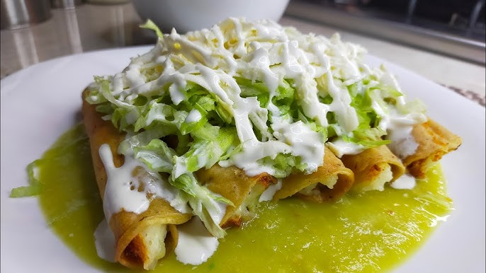

Home
Tacos dorados

These crispy rolled tacos are filled with mashed potatoes & chorizo or
tinga (shredded chipotle chicken), deep-fried, and topped with lettuce, cream, and salsa.
Ingredients (for 12 tacos):
- 12 corn tortillas
- 2 cups filling:
Potato-chorizo: Mashed potatoes + fried chorizo.
Tinga poblana: Shredded chicken in chipotle-tomato sauce.
- Oil (for frying)
- Shredded lettuce
- Mexican crema
- Queso fresco
- Salsa verde or roja
Instructions:
- Prepare the filling:
For papa con chorizo: Boil 2 potatoes, mash, and mix with cooked chorizo.
For tinga: Simmer shredded chicken with tomatoes, chipotles, and onions.
- Roll the tacos:
Warm tortillas briefly to make them pliable.
Place 1–2 tbsp filling in each tortilla, roll tightly, and secure with a toothpick.
- Fry until golden:
Heat oil to 350°F (175°C) and fry tacos in batches until crisp (~2–3 minutes).
Drain on paper towels.
- Top and serve:
Remove toothpicks, then layer with lettuce, crema, cheese, and salsa.
Tip: In Puebla, these are sometimes served "bañados" (drenched in salsa) or "secos"
(dry, with toppings on the side).